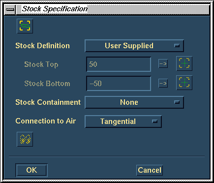
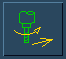
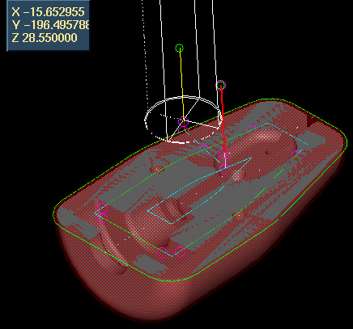

Add and operation to face off the top of the part.
| Next Page | Previous Page | First Page |
Add and operation to face off the top of the part.
Add Operation, Milling, Volume Clear, Create, Pick
the top faces only.

Take the default Stok Options
Select a 20mm End Mill tool
Select Tool, Find, Pick 20mm End Mill,
OK, OK

Change the final machining allowance to zero.
Machining Parameters, Allowances and Tolerances,
Default Finish Allowance = 0, OK

Create the Tool paths.


Animate the tool motion.

Modify the current operation to change the machining pattern from inside/outside -> outside/inside.

Machining Parameters, Cut, Cut Pattern,
Outside/Inside, OK, Update Toolpaths